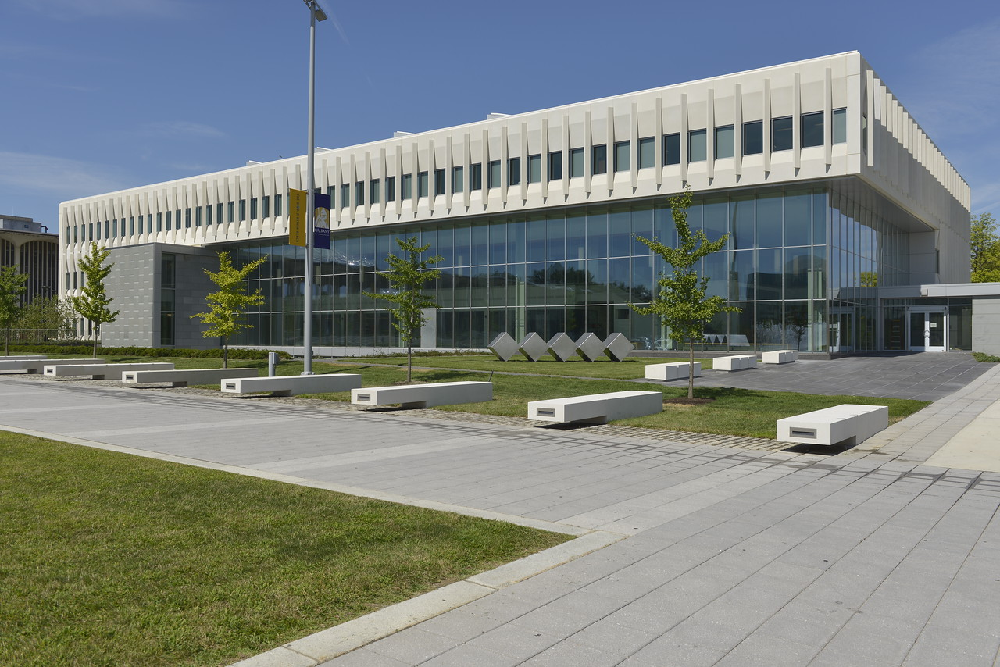
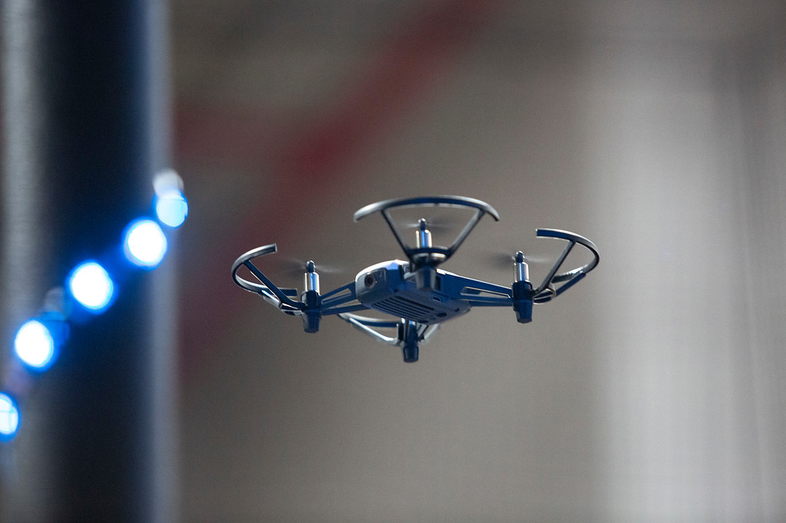
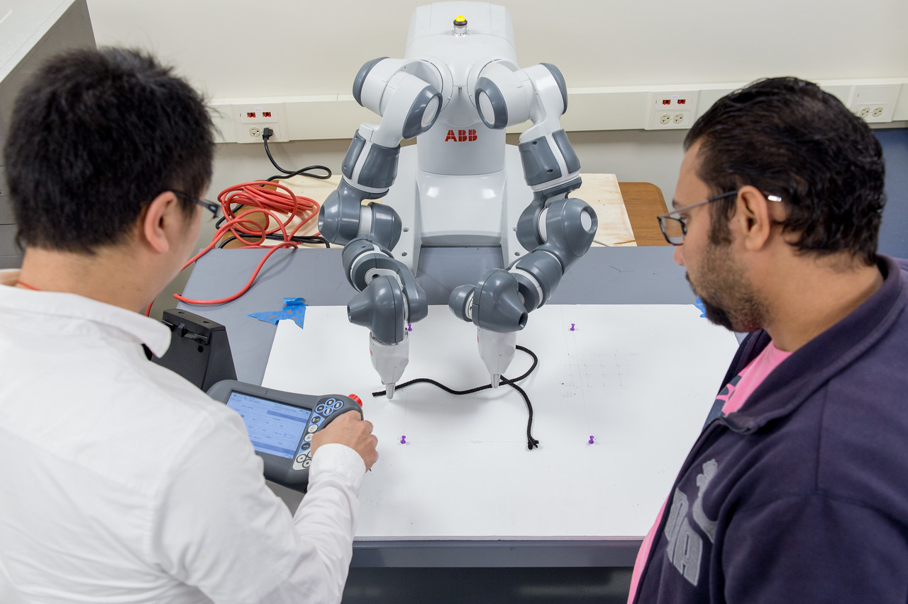
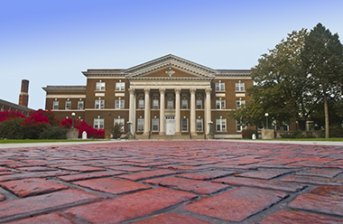
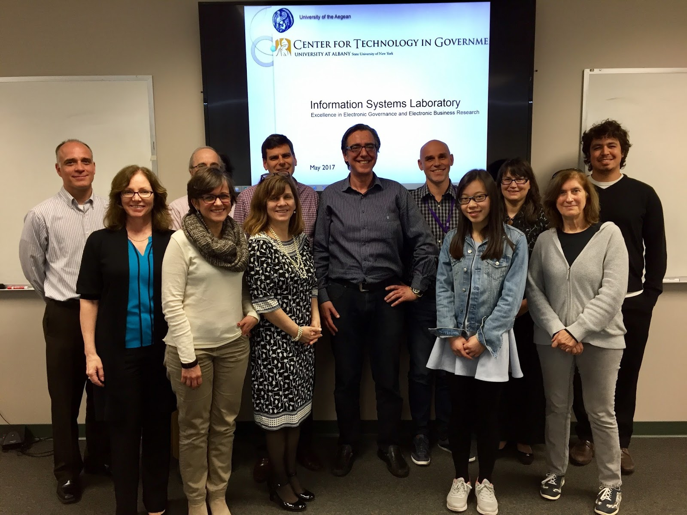
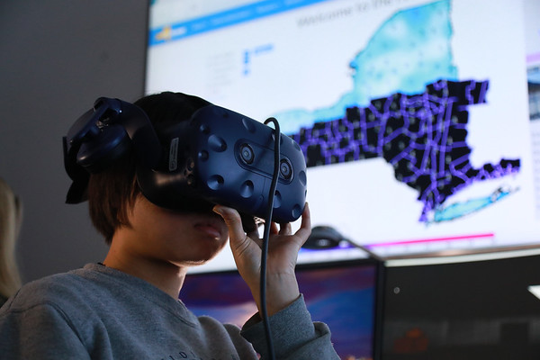
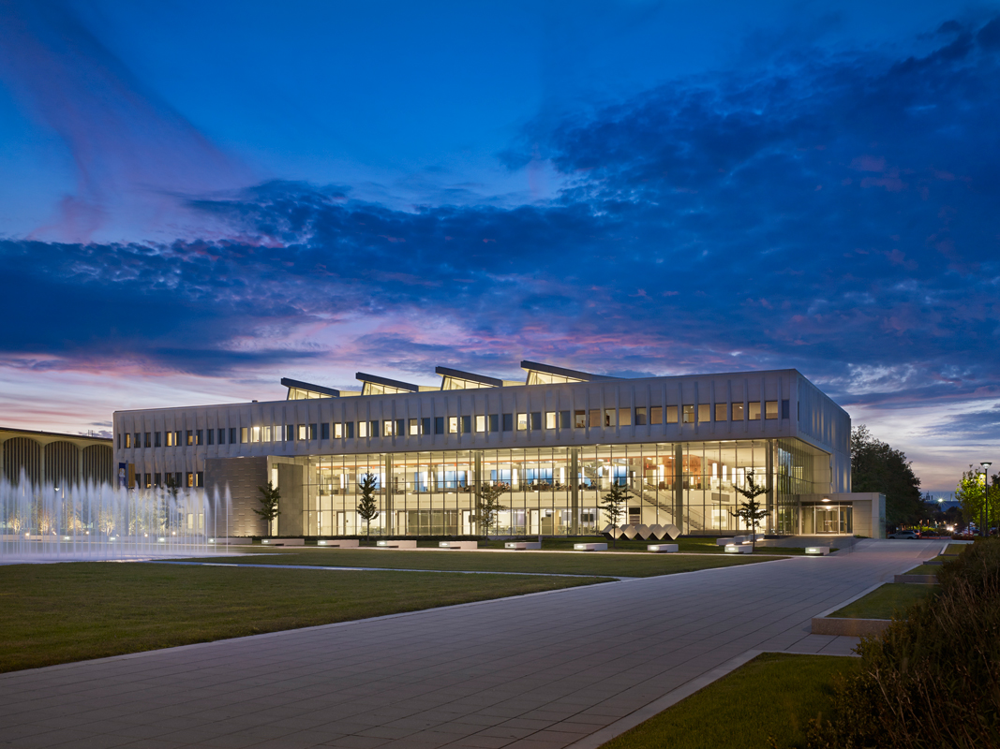

COLLEGES, SCHOOLS, AND CENTERS
School of Business
(Information Security and Cybersecurity)

Chair: Sanjay Goel, Director of Research, New York State Center for
Information Forensics and Assurance
Building Address: Business Building 311
Phone Number: 518-956-8323
Email: goel@albany.edu
The programs offered by the Department of Information Security and Digital Forensics teach students how to investigate, respond to and manage incidents, such as, cyber attacks, data breaches, fraud or financial crimes, and malicious activity. Students get the opportunity to consult with Fortune 500 companies or federal government/law enforcement agencies on forensic technology, cyber risk, regulatory/compliance, and criminal investigations as well as perform cyber intelligence and systems defense related to cyber attacks. The Information Security and Digital Forensics faculty will ensure students are equipped to spot security breaches, gather electronic evidence (eDiscovery), manage risk and incident response planning and policy, and investigate regulatory compliance issues, criminal activity, and financial fraud.
College of Emergency Preparedness, Homeland Security and Cybersecurity

Dean: Robert P. Griffin
Building Address: Draper Hall 015
Phone Number: 518-442-5258
Email: rpgriffin@albany.edu
The College of Emergency Preparedness, Homeland Security and Cybersecurity provides high quality academic programs, blending an interdisciplinary and entrepreneurial spirit, fostering enthusiasm for learning and teaching, promoting operational application of knowledge, and leading cutting-edge research initiatives that bring together people, technology, and knowledge to address the challenges of the 21st century. Programs within the department of Emergency Preparedness, Homeland Security and Cybersecurity teach students the skills to solve practical data management problems and prepare for emergency situations, including critical security breaches and malicious cyber attacks.
COLLEGE OF ENGINEERING AND APPLIED SCIENCES
(Department of Computer Science)

Chair: Won Namgoong, Professor and Associate Dean for Research, Interim Chair Computer Science
Building Address: UAB 400
Phone Number: 518-956-8247
Email: wnamgoong@albany.edu
For students who want to make their mark in the American high-tech economy, UAlbany provides a strong foundation in software development and advanced use of technology. The Department of Computer Science is the natural home for students interested in artificial intelligence, forensics, graphics, modeling and simulation, natural language processing, networks, parallel and distributed processing, security, software engineering practice and principles, algorithms, discrete mathematics, logic and optimization. The knowledge and skills gained through the Department in computer science prepare students for careers in a broad range of information technology opportunities and many related fields. We believe in "Empowering People Through Information."
COLLEGE OF ARTS AND SCIENCES
(Department of Mathematics and Statistics)
Chair: Michael Stessin, Professor and Chair
Building Address: ES 110
Phone Number: 518-442-4605
Email: stessin@albany.edu
The Mathematics & Statistics department is a robust community of scholars, teachers, and students. The tenured and tenure-track faculty members represent a broad spectrum of mathematical research fields, and include many internationally prominent researchers. With a number of award-winning teachers, and research projects backed by prestigious grants, the University at Albany Mathematics & Statistics department is a top-tier environment for mathematical study. Programs within the Mathematics & Statistics Department will help students learn how to acquire, process, analyze and present complex data to make better management and policy decisions in industries like biotechnology, energy, quality control, transportation, telecommunications and politics.
School of Education
Dean: Jason Lane, Professor & Interim Dean
Building Address: Catskill 321
Phone Number: 518-442-5092
Email: jlane@albany.edu
The nationally ranked and accredited programs of the School of Education have been the springboard to outstanding careers in numerous fields. At UAlbany, students participate in a community of scholarship with a legacy of enhancing education in New York State and the nation, and which today is fulfilling a commitment to serve the needs of educators around the world.
Rockefeller College

Dean: R. Karl Rethemeyer, Dean & Professor,
Public Administration & Policy
Building Address: Milne 102B
Phone Number: 518-442-5283
Email: kretheme@albany.edu
Rockefeller College of Public Affairs & Policy at the University at Albany is proud to be recognized by US News & World Report as one of the top schools in the country. Talented students come to Rockefeller for the knowledge and tools to make a difference in the world. We pride ourselves on preparing dynamic leaders who will shape the public policies of the future, including policies relating to information security and management.
Centers & Labs
Center for Technology in Government
Director: Theresa Pardo,
Research Associate Professor, Public Administration & Policy,
Rockfeller College of Public Affairs and Policy
Email: tpardo@ctg.albany.edu
Phone: 518-442-3892
- We advise government leaders - at all levels - on innovative ways technology can help solve pressing public problems.
- We connect possible applications of technology with the policy and management needed to govern it through an overarching, informed, and long term perspective.
- We leverage data gathering and analytics to deliver informed and thorough programs and services that can transform the lives of citizens.
- We build relationships, trust, and the shared vision needed for diverse and disparate organizations to collaborate and cooperate on projects.
- We lead an international research community in the education of the next generation of public sector leaders.
National Center for Security & Preparedness
Director: Jayson Kratoville, Interim Director
Email: jkratoville@albany.edu
The Homeland Security community’s strength derives from the diverse skills and experiences of those who support its broad mission. The National Center for Security & Preparedness (NCSP) prides itself on bringing together these perspectives to make a difference. As a center within the College of Emergency Preparedness, Homeland Security, and Cybersecurity, NCSP connects emerging ideas from the academic community with insight from practitioners to support training, exercises, policy development, and practical research.
Institute for Informatics, Logics and Security Studies
Director: Vacant
"The Institute for Informatics, Logics and Security Studies (ILS) at the University at Albany, State University of New York has been established in December 2001 by extending and broadening the scope of the Institute of Programming and Logics, which was part of the Computer Science Department since 1992. The formation of ILS represents a significant shift in the focus of the institute and its revised research priorities to address critical national security issues. ILS includes the Natural Language Information Processing Laboratory (NLIP) Lab formed in the Fall 2000.
The Institute’s mission is to increase the University at Albany’s reputation and visibility as a center of excellence in information technology research and education, contributing to various University-wide initiatives such as bio-informatics, information science, information assurance and security (credit kim). Through collaboration with key members of academia, government, and industry, the Institute is working to develop educational programs, advance pioneering research, create innovative technologies, transfer valuable knowledge and expertise, and foster an environment of cooperation and trust among its partners. We strive to create a collegial environment by bringing together students and researchers from various parts of the University and across New York State. The Institute is sponsoring a computational informatics seminar series, and serves as a host for visitors from industry, academia, and research-sponsoring government agencies."
New York State Center for Information Forensics and Assurance
Director: Sanjay Goel, Director and Founder
Email: goel@albany.edu
Phone: 518-956-8323
"The New York State Center for Information Forensics and Assurance (CIFA) fosters information assurance and forensics activity at UAlbany. It is a partnership of the University at Albany, SUNY, New York State Office of Information Technology Services, and the New York State Police.
CIFA's mission is research and education to better enable practitioners to address real problems in information forensics and assurance, especially in the area of public protection and cyber defense.
Specifically, CIFA:
-Targets the public sector workforce in an effort to build knowledge resources and practical skills within state and local government.
-Develops and deploys courseware for academic and professional education programs in related disciplines.
-Provides a home for multidisciplinary researchers and practitioners developing workable approaches to emerging information forensics and assurance issues and effective methods to facilitate learning and dissemination of these approaches."
Forensics, Analytics, Complexity, Energy and Transportation Security Center (FACETS)
Director: Sanjay Goel, Interim Director
Email: goel@albany.edu
Phone: 518-956-8323
FACETS is a leading research center in Digital Forensics and Cybersecurity, dedicated to protecting the nation’s electronic infrastructure.
With funding from the National Science Foundation (NSF), Intelligence Advanced Research Projects Activity (IARPA), and the National Institute
of Standards and Technology (NIST), among others, UAlbany’s FACETS Center fosters innovative research built on blended strengths in information
security, data mining, cybersecurity, digital forensics and information technology security, and research strengths in behavioral foundations of
security, self-organized systems, cyber-warfare, resilient transportation, SCADA and other cyber-intelligent systems.